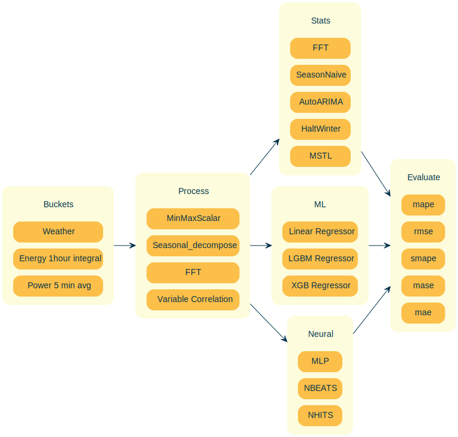

!jt -lAvailable Themes:
chesterish
grade3
gruvboxd
gruvboxl
monokai
oceans16
onedork
solarizedd
solarizedlpip install jupyterthemes!jt -lAvailable Themes:
chesterish
grade3
gruvboxd
gruvboxl
monokai
oceans16
onedork
solarizedd
solarizedljupyter notebook --generate-config
To view jupyter config
cat ~/.jupyter/jupyter_notebook_config.py
sudo vim ~/.jupyter/jupyter_notebook_config.pyc.NotebookApp.ip = '0.0.0.0'
c.NotebookApp.port = 8888
c.NotebookApp.open_browser = FalseThere are a couple of shortcuts you must know about which we use all the time (always in Command Mode). These are:
You can find more shortcuts by typing h (for help).
You may need to use shell commands, like ls or cat in a Jupyter Notebook environment. That is very easy to do: just type ! before you shell command, like so:
ls -hiddenls: invalid option -- 'e'
Try 'ls --help' for more information.The five most important concepts to format your code appropriately when using Markdown are:
Italics:: Surround your text with _ or *.
Bold:: Surround your text with __ or **.
inline:: Surround your text with `.
blockquote:: Place > before your text.
superscript2 / subscript2
Links:: Surround the text you want to link with [] and place the link adjacent to the text, surrounded with ().
(# is level one, ## is level two, ### is level three and #### is level four)
There are three types of lists in markdown.
Ordered list:
Unordered list
Task list
In the notebook, double click on them to see how they are built!
| Col1 | Col2 | Col3 |
|---|---|---|
| A | B | C |
| E | F | G |
| A | G | G |
| Col1 | Col2 | Col3 |
|---|---|---|
| A | B | C |
| E | F | G |
| A | G | G |
| Fruit | Price | Advantages |
|---|---|---|
| Bananas | $1.34 |
|
| Oranges | $2.10 |
|
| Right | Left | Default | Center |
|---|---|---|---|
| 12 | 12 | 12 | 12 |
| 123 | 123 | 123 | 123 |
| 1 | 1 | 1 | 1 |
| fruit | price |
|---|---|
| apple | 2.05 |
| pear | 1.37 |
| orange | 3.09 |
from graphviz import Digraph
def create_nodes(graph, items, colours):
with graph.subgraph(name=f'{items[0]}') as c:
c.attr(style='filled', fillcolor=colours[0], label=items[0][7:], rank = 'same', fontcolor=colours[2])
c.node_attr.update(style='filled', fillcolor=colours[1], shape='box', fontcolor=colours[2])
for data in items[1:]: c.node(f'{data}', f'{data}')
def create_edges(graph, Begin, End, colour):
for beginning in Begin[1:]:
for towards in End[1:]: graph.edge(f'{beginning}', f'{towards}', len='5.00', color = colour[4])primary = '#FFFFFF'
secondary = '#F6AE2D'
third = '#002855'
bg = '#F1FAF0'
fifth = '#002855'
colours = [primary, secondary, third, bg, fifth]
Buckets = ['clusterBuckets', 'Energy_1hour_integral', 'Power_5min_avg', 'Weather']
Process = ['clusterProcess', 'MinMaxScalar', 'Seasonal_decompose']
Stats = ['clusterStats', 'AutoARIMA', 'HaltWinter', 'MSTL', 'FFT', 'SeasonNaive']
ML = ['clusterML', 'LGBMRegressor', 'XGBRegressor', 'LinearRegression']
Neural = ['clusterNeural', 'NBEATS', 'NHITS', 'MLP']
Evaluate = ['clusterEvaluate', 'mase', 'mae', 'mape', 'rmse', 'smape']
Nodes = [Buckets, Process, Stats, ML, Neural, Evaluate]
# Create a directed graph
graph = Digraph(filename = 'test', directory = './Data', engine = 'dot')
graph.attr('graph', style='filled', bgcolor=colours[3])
graph.graph_attr['rankdir'] = 'LR'
for items in Nodes:
create_nodes(graph, items, colours)
# Add edges
create_edges(graph, Buckets, Process, colours)
create_edges(graph, Process, Stats, colours)
create_edges(graph, Process, ML, colours)
create_edges(graph, Process, Neural, colours)
create_edges(graph, Stats, Evaluate, colours)
create_edges(graph, ML, Evaluate, colours)
create_edges(graph, Neural, Evaluate, colours)
# Save the graph as a PNG file
graph.render( format='svg', cleanup=False)'Data/test.svg'
from graphviz import Digraph
import graphvizfrom nbdevAuto.functions import graph
g = graph('A', filename='Data/plan', engine = 'dot')
buc = 'buc'
g.node('Buckets',
f'''<<TABLE BORDER="0" CELLBORDER="0" CELLSPACING="10" CELLPADDING="10" STYLE = "rounded">
<TR><TD PORT="{buc}" BORDER="0" STYLE = "rounded" WIDTH="50" >Buckets</TD></TR>
<TR><TD PORT="Weather" STYLE = "rounded" BGCOLOR="{g.secondary}" >Weather</TD></TR>
<TR><TD PORT="Energy" STYLE = "rounded" BGCOLOR="{g.secondary}" >Energy 1hour integral</TD></TR>
<TR><TD PORT="Power" STYLE = "rounded" BGCOLOR="{g.secondary}" >Power 5 min avg</TD></TR>
</TABLE>>''',
fillcolor=g.primary,
penwidth = '0')
g.node('Process',
f'''<<TABLE BORDER="0" CELLBORDER="0" CELLSPACING="10" CELLPADDING="10" STYLE = "rounded">
<TR><TD PORT="Pro" BORDER="0" STYLE = "rounded" WIDTH="50" >Process</TD></TR>
<TR><TD PORT="MinMax" STYLE = "rounded" BGCOLOR="{g.secondary}" >MinMaxScalar</TD></TR>
<TR><TD PORT="Seasonal" STYLE = "rounded" BGCOLOR="{g.secondary}" >Seasonal_decompose</TD></TR>
<TR><TD PORT="FFT" STYLE = "rounded" BGCOLOR="{g.secondary}" >FFT</TD></TR>
<TR><TD PORT="Correlation" STYLE = "rounded" BGCOLOR="{g.secondary}" >Variable Correlation</TD></TR>
</TABLE>>''',
fillcolor=g.primary,
penwidth = '0')
g.node('Stats',
f'''<<TABLE BORDER="0" CELLBORDER="0" CELLSPACING="10" CELLPADDING="10" STYLE = "rounded">
<TR><TD PORT="sta" BORDER="0" STYLE = "rounded" WIDTH="50" >Stats</TD></TR>
<TR><TD PORT="FFT" STYLE = "rounded" BGCOLOR="{g.secondary}" >FFT</TD></TR>
<TR><TD PORT="Naive" STYLE = "rounded" BGCOLOR="{g.secondary}" >SeasonNaive</TD></TR>
<TR><TD PORT="ARIMA" STYLE = "rounded" BGCOLOR="{g.secondary}" >AutoARIMA</TD></TR>
<TR><TD PORT="HaltWinter" STYLE = "rounded" BGCOLOR="{g.secondary}" >HaltWinter</TD></TR>
<TR><TD PORT="MSTL" STYLE = "rounded" BGCOLOR="{g.secondary}" >MSTL</TD></TR>
</TABLE>>''',
fillcolor=g.primary,
penwidth = '0')
g.node('ML',
f'''<<TABLE BORDER="0" CELLBORDER="0" CELLSPACING="10" CELLPADDING="10" STYLE = "rounded">
<TR><TD PORT="M" BORDER="0" STYLE = "rounded" WIDTH="50" >ML</TD></TR>
<TR><TD PORT="LinearRegression" STYLE = "rounded" BGCOLOR="{g.secondary}" >Linear Regressor</TD></TR>
<TR><TD PORT="LGBM" STYLE = "rounded" BGCOLOR="{g.secondary}" >LGBM Regressor</TD></TR>
<TR><TD PORT="XGB" STYLE = "rounded" BGCOLOR="{g.secondary}" >XGB Regressor</TD></TR>
</TABLE>>''',
fillcolor=g.primary,
penwidth = '0')
g.node('Neural',
f'''<<TABLE BORDER="0" CELLBORDER="0" CELLSPACING="10" CELLPADDING="10" STYLE = "rounded">
<TR><TD PORT="Neu" BORDER="0" STYLE = "rounded" WIDTH="50" >Neural</TD></TR>
<TR><TD PORT="MLP" STYLE = "rounded" BGCOLOR="{g.secondary}" >MLP</TD></TR>
<TR><TD PORT="NBEATS" STYLE = "rounded" BGCOLOR="{g.secondary}" >NBEATS</TD></TR>
<TR><TD PORT="NHITS" STYLE = "rounded" BGCOLOR="{g.secondary}" >NHITS</TD></TR>
</TABLE>>''',
fillcolor=g.primary,
penwidth = '0')
g.node('Evaluate',
f'''<<TABLE BORDER="0" CELLBORDER="0" CELLSPACING="10" CELLPADDING="10" STYLE = "rounded">
<TR><TD PORT="Eval" BORDER="0" STYLE = "rounded" WIDTH="50" >Evaluate</TD></TR>
<TR><TD PORT="mape" STYLE = "rounded" BGCOLOR="{g.secondary}" >mape</TD></TR>
<TR><TD PORT="rmse" STYLE = "rounded" BGCOLOR="{g.secondary}" >rmse</TD></TR>
<TR><TD PORT="smape" STYLE = "rounded" BGCOLOR="{g.secondary}" >smape</TD></TR>
<TR><TD PORT="mase" STYLE = "rounded" BGCOLOR="{g.secondary}" >mase</TD></TR>
<TR><TD PORT="mae" STYLE = "rounded" BGCOLOR="{g.secondary}" >mae</TD></TR>
</TABLE>>''',
fillcolor=g.primary,
penwidth = '0')
g.edge('Buckets', 'Process')
g.edge('Process', 'Stats')
g.edge('Process', 'ML')
g.edge('Process', 'Neural')
g.edge('Stats', 'Evaluate')
g.edge('ML', 'Evaluate')
g.edge('Neural', 'Evaluate')
g.render(format='svg', cleanup=False)
g
| Header 1 | Header 2 |
|---|---|
 |
Regular output |
import graphviz dot_data = ’’’ digraph { A -> B; A -> C; B -> D; C -> D; } ’’’ graph = graphviz.Source(dot_data) graph
flowchart LR
A[Hard edge] --> B(Round edge)
B --> C{Decision}
C --> D[Result one]
C --> E[Result two]
sequenceDiagram
participant Alice
participant Bob
Alice->>John: Hello John, how are you?
loop Healthcheck
John->>John: Fight against hypochondria
end
Note right of John: Rational thoughts <br/>prevail!
John-->>Alice: Great!
John->>Bob: How about you?
Bob-->>John: Jolly good!
---
title: Animal example
---
classDiagram
note "From Duck till Zebra"
Animal <|-- Duck
note for Duck "can fly\ncan swim\ncan dive\ncan help in debugging"
Animal <|-- Fish
Animal <|-- Zebra
Animal : +int age
Animal : +String gender
Animal: +isMammal()
Animal: +mate()
class Duck{
+String beakColor
+swim()
+quack()
}
class Fish{
-int sizeInFeet
-canEat()
}
class Zebra{
+bool is_wild
+run()
}
stateDiagram
[*] --> Still
Still --> [*]
Still --> Moving
Moving --> Still
Moving --> Crash
Crash --> [*]
---
title: Order example
---
erDiagram
CUSTOMER ||--o{ ORDER : places
ORDER ||--|{ LINE-ITEM : contains
CUSTOMER }|..|{ DELIVERY-ADDRESS : uses
journey
title My working day
section Go to work
Make tea: 5: Me
Go upstairs: 3: Me
Do work: 1: Me, Cat
section Go home
Go downstairs: 5: Me
Sit down: 5: Me
gantt
dateFormat HH:mm
axisFormat %H:%M
Initial milestone : milestone, m1, 17:49, 2m
Task A : 10m
Task B : 5m
Final milestone : milestone, m2, 18:08, 4m
pie title Pets adopted by volunteers
"Dogs" : 386
"Cats" : 85
"Rats" : 15
--- title: Example Git diagram --- gitGraph commit commit branch develop checkout develop commit commit checkout main merge develop commit commit
timeline
title History of Social Media Platform
2002 : LinkedIn
2004 : Facebook : Google
2005 : Youtube
2006 : Twitter
Note that there are five types of callouts, including: note, warning, important, tip, and caution.
This is an example of a callout with a title.
This is an example of a ‘folded’ caution callout that can be expanded by the user. You can use collapse="true" to collapse it by default or collapse="false" to make a collapsible callout that is expanded by default.
a = 1
b = a + 1
c = b + a + 1
d = c + b + a + 1
a, b, c ,d(1, 2, 4, 8)import matplotlib.pyplot as plt
plt.plot([a,b,c,d])
plt.show()
There are a couple of useful keyboard shortcuts in Command Mode that you can leverage to make Jupyter Notebook faster to use. Remember that you can switch back and forth between Command Mode and Edit Mode with Esc and Enter.
There are also some tricks that you can code into a cell:
?function-name:: Shows the definition and docstring for that function??function-name:: Shows the source code for that functiondoc(function-name):: Shows the definition, docstring and links to the documentation of the function (only works with fastai library imported)Here’s an example of using ? to learn about Python’s print() function:
print("asd")asdLine magics are functions that you can run on cells. They should be at the beginning of a line and take as an argument the rest of the line from where they are called. You call them by placing a ‘%’ sign before the command. The most useful ones are:
%matplotlib inline:: Ensures that all matplotlib plots will be plotted in the output cell within the notebook and will be kept in the notebook when saved.This command is always called together at the beginning of every notebook of the fast.ai course.
%matplotlib inline%timeit:: Runs a line ten thousand times and displays the average time it took to run.41.8 µs ± 3.17 µs per loop (mean ± std. dev. of 7 runs, 10,000 loops each)%debug: Inspects a function which is showing an error using the Python debugger. If you type this in a cell just after an error, you will be directed to a console where you can inspect the values of all the variables.